野菜
ゴボウ
ごぼう
別名・別表記牛蒡、gobou、gobo
旬は1月・11月・12月
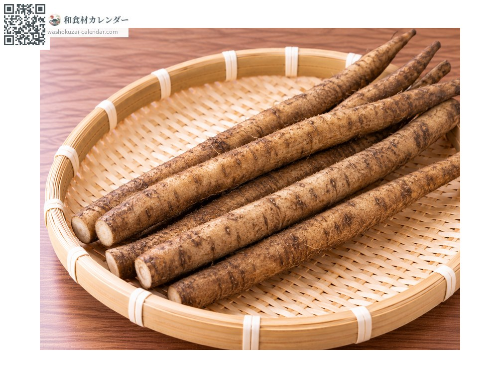
旬の時期
1月
2月
3月
4月
5月
6月
7月
8月
9月
10月
11月
12月
旬出回り
調理法
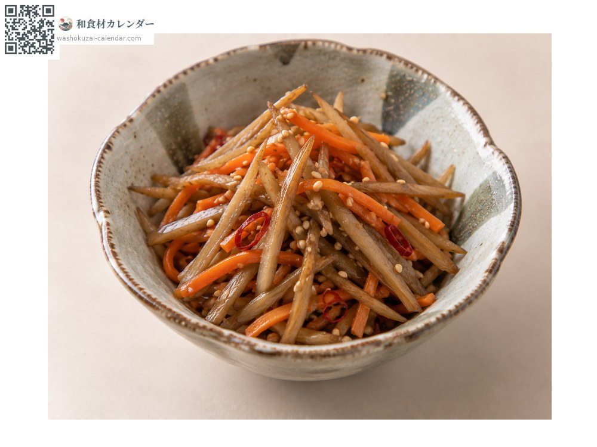
きんぴら
定番。ささがきにして炒める。
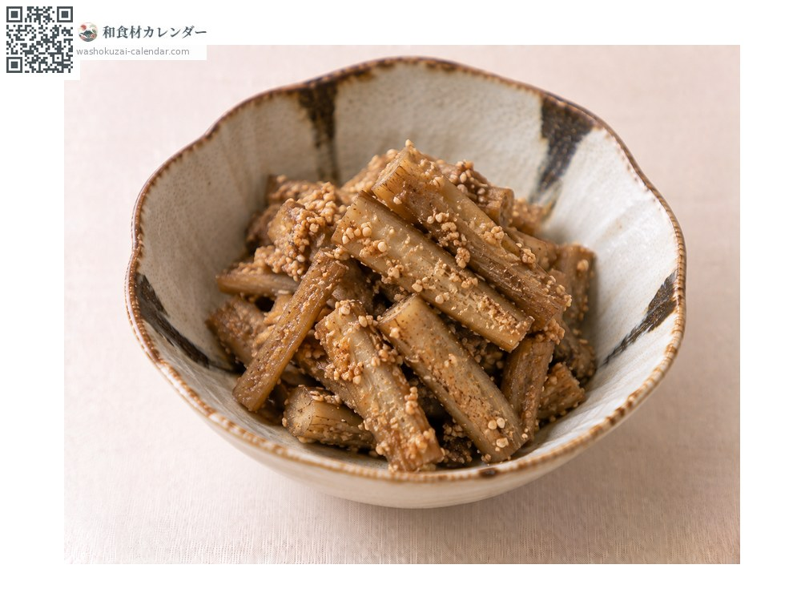
たたきごぼう
叩いて味を含ませる。
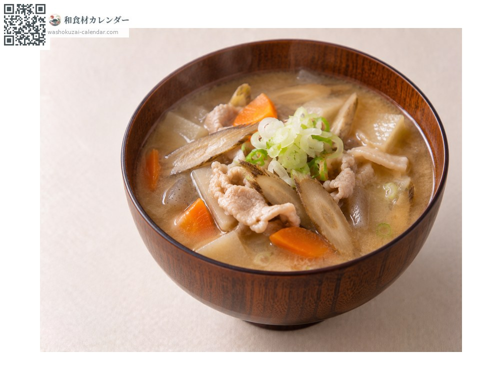
豚汁
具として。香りが出る。
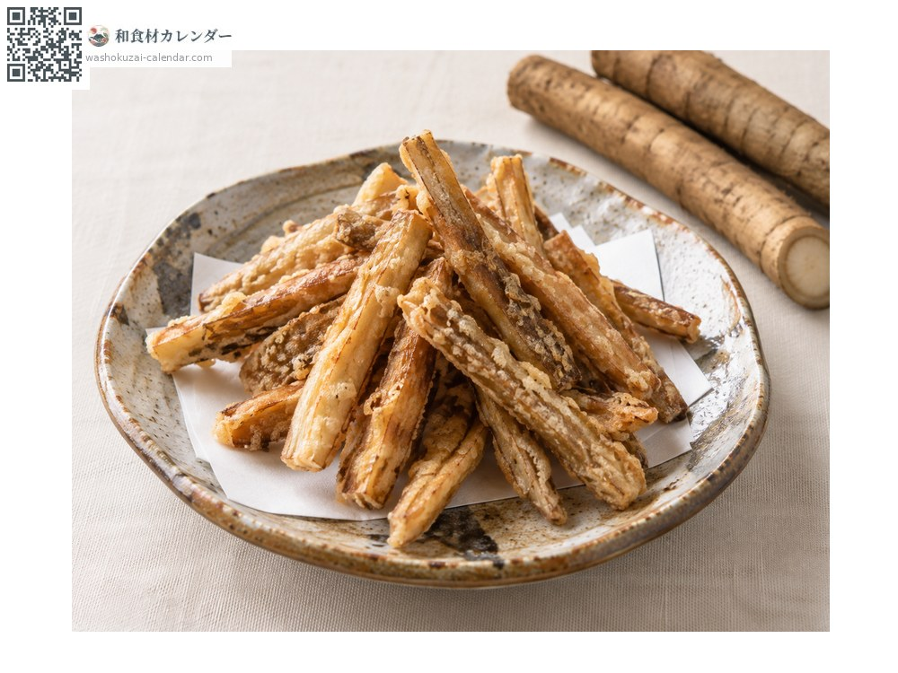
唐揚げ
衣をつけて揚げる。
選び方
泥付きでひび割れがなく、太さが均一なもの。太すぎるものは中に空洞がある場合も。
保存方法
泥付きのまま新聞紙に包んで冷暗所へ。洗ったものは乾燥しやすいので冷蔵。
主な産地
豆知識
日本以外ではあまり食用にされない。香りは皮の近くに多いので、皮は削ぎ落とす程度に。
同じころが旬のもの
 セリ
セリ キャベツ
キャベツ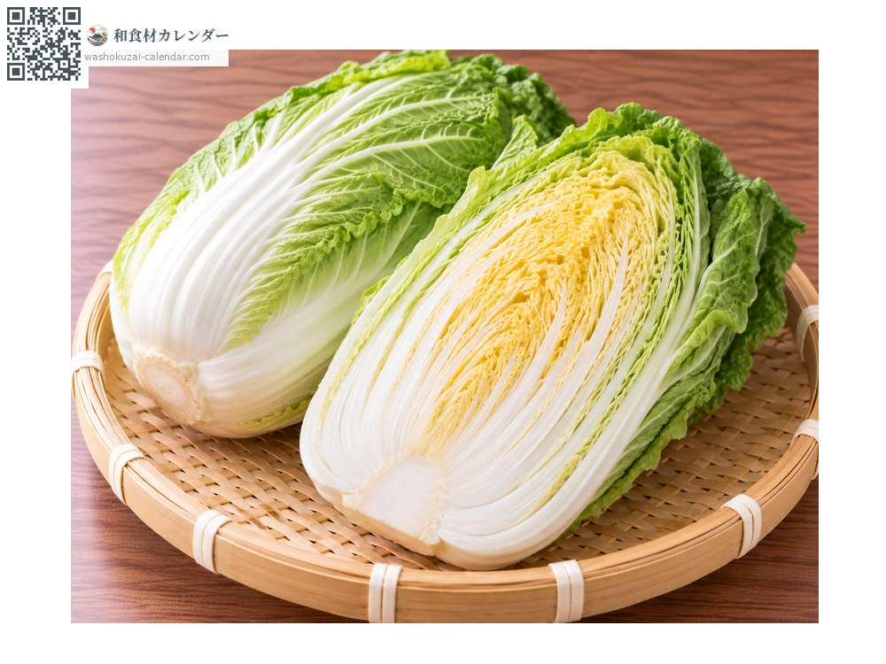
ハクサイ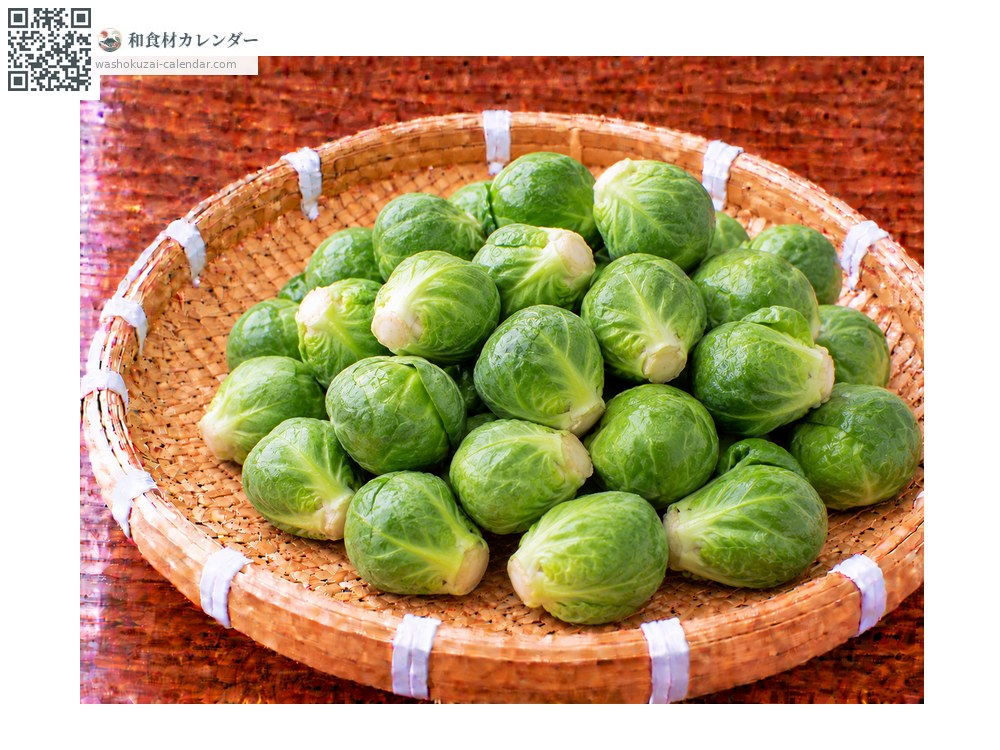
芽キャベツ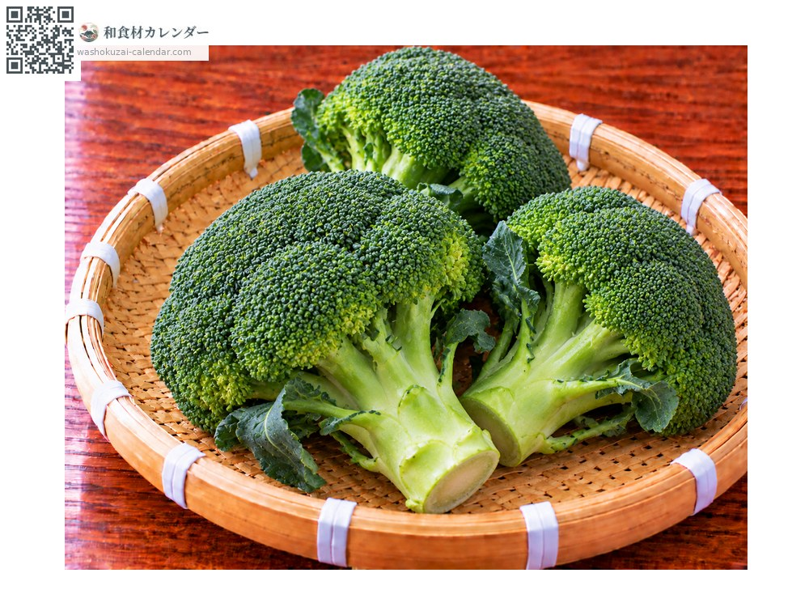
ブロッコリー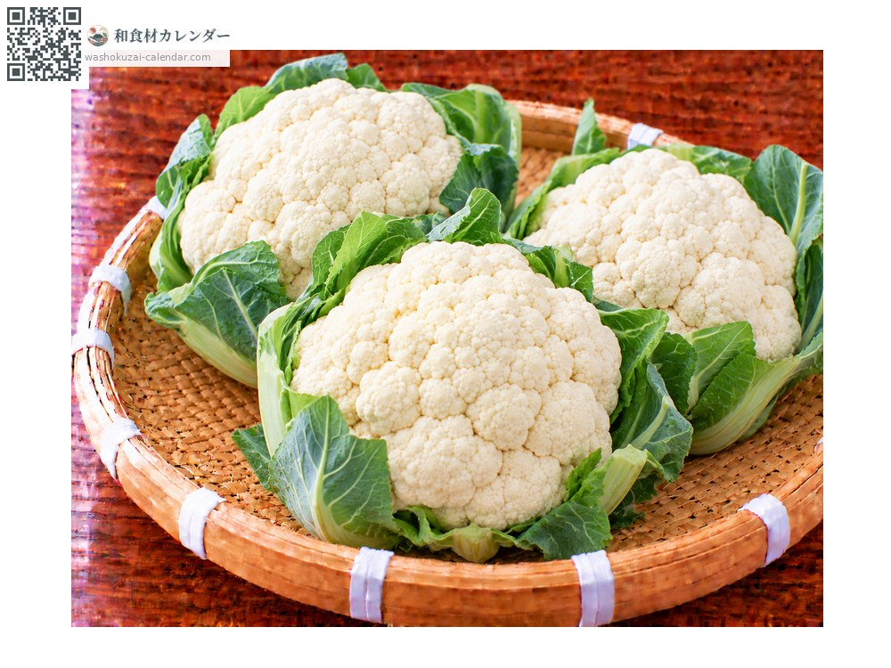
カリフラワー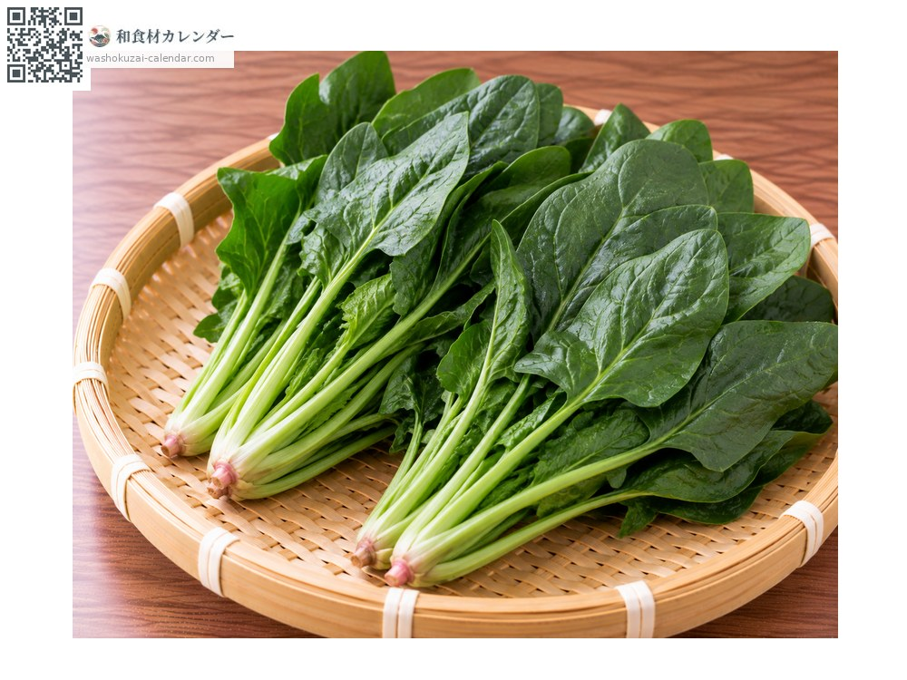
ホウレンソウ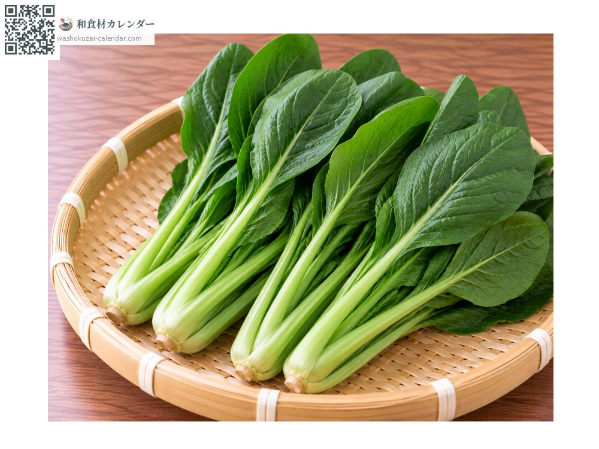
コマツナ